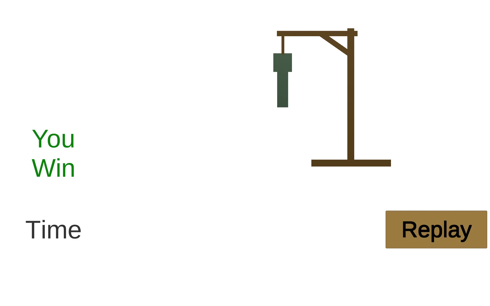

Experience
A word puzzle in which the player selects letters to uncover a hidden word. Correct guesses reveal matching positions, while incorrect choices reduce the room for further mistakes.

Description
A correct letter reveals its positions in the answer. An incorrect letter consumes another attempt, so each choice must balance common letters with the pattern that has already been uncovered.
The word display and the record of guesses provide the information for the next decision. The goal is to complete the answer before the allowed mistakes run out.

Detailed features
Letter selection
A choice reveals new information about a hidden answer. The challenge is to use that feedback to make the next guess more useful than the last.
Hidden-word reveal
A choice reveals new information about a hidden answer. The challenge is to use that feedback to make the next guess more useful than the last.
Correct and incorrect guess feedback
A choice reveals new information about a hidden answer. The challenge is to use that feedback to make the next guess more useful than the last.
Build summary
The Unity source separates the project into runtime C# components. The saved code includes scene flow, ui components. The script examples below identify concrete parts of this project’s implementation.
- Technology
- Unity
- Scope
- Unity project
- Presentation
- 1080p or higher
Implementation examples
Basics.csGameController.csButtonController.cs
Feature video
Actual project footage · 1920 × 1200 · No narration